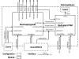

|
Multihop Routing
Last updated 03 Sep 2003 |
| Overview |
The TinyOS-1.1 release and later include library components that provide ad-hoc multi-hop routing for sensor sensor network applications. The implementation uses a shortest-path-first algorithm with a single destination node (the root) and active two-way link estimation. The data movement and route decision engines are split into separate components with a single interface between them to permit other route-decision schemes to be easily integrated in the future. Use the multi-hop router is essentially transparent to applications (provided they correctly use the interface).
| Description |
The multi-hop implementation consists of two core modules, MultiHopEngineM and MultiHopLEPSM, wired together in a single configuration, MultiHopRouter. Figure 1 provides an overview of the configuration.

Figure 1: MultiHopRouter configuration. Direction of arrows indicates
interface provider/user relationships NOT data flow direction.
Interface Description:
The component configuration exports 6 interfaces. A '[ ]' after the interface name indicates the interface is parameterized. For more information on the specifics of the interface, consult the associated '.nc' interface definition files.
Component Description:
MultiHopEngineM - Provides the overall packet movement logic for multi-hop functionality. Using the RouteSelect interface, it determines the next-hop path forwards them out the parameterized SendMsg port. The mechanics of this module are independent of route selection. It only requires that the RouteSelect and RouteControl interfaces be available from the algorithmic component.
MultiHopLEPSM - Provides the Link Estimation and Parent Selection (LEPS) mechanisms for the multi-hop implementation. The module monitors all traffic received at the node (via the Snoop port) and directly receives single-hop route update messages (AM_MULTIHOPMSG) that may be sent from neighbors within the single hop range. Internally, this module manages the nearest available neighbors and decides the next hop destination based on shortest path semantics. Presently, the destination is identified as the node with TOS_LOCAL_ADDRESS set to 0. By default, the module sends a route update message once every 10 seconds and re-computes after 50 seconds (5 route update messages). MultiHopLEPSM may be interchanged with other modules that implement different selection algorithms.
MultiHopRouter - This configuration connects MultiHopEngineM, MultiHopLEPSM with other necessary components. The configuration exports the Receive, Send, and Intercept and Snoop (as Intercept) ports to applications. The SendMsg port of MultiHopEngineM is wired to the QueuedSend library components for queuing outbound packets (both forwarded and locally originated). The ReceiveMsg and SendMsg ports of MultiHopLEPSM are wired to the AM_MULTIHOPMSG parameter of the communication provider for the purpose of exchanging single-hop route updates with neighbors.
| Usage |
Use of the multi-hop library component is mostly transparent to the application. Any application that uses the Send interface can be connected to this component to achieve multi-hop functionality. One limitation of multi-hop, however, is the aggregate data rate. Applications should maintain average message frequency at or below one message every 2 seconds. Higher rates can lead to congestion and or overflow of the communication queue.
Surge
The Surge application, in apps/Surge, is a simple example of a mutlihop application. Surge takes light sensor readings and sends them over the mesh to the base node (Node 0). Accompanying this application is a Java program that can be used to visualize the logical network topology and the sensor readings. Users are encouraged to review the application, SurgeM.nc, and it's configuration, Surge.nc, to better understand how to use the multi-hop tools.
To build the Surge mote application, change to the apps/Surge directory and issue a 'make <platform>' where platform is the name of your target mote type. To build the java tools, change to the tools/java/net/tinyos/surge director and issue 'make'
Install the application onto the target nodes, giving each node a unique address. Remember, the node with address 0 will be the base station. This node should be connected to a PC via a serial or network link.
To run the java application, first start the necessary serial forwarder helpers needed to link the base node and the PC. Start the java tool, i.e 'java net.tinyos.surge.MainClass <GroupId>', where GroupId is the AM group id used when compiling the mote application. When the application starts, you should immediately see the base node reporting sensor values. After about 1 minute, other nodes should appear as the network topology builds.
{kind=link}